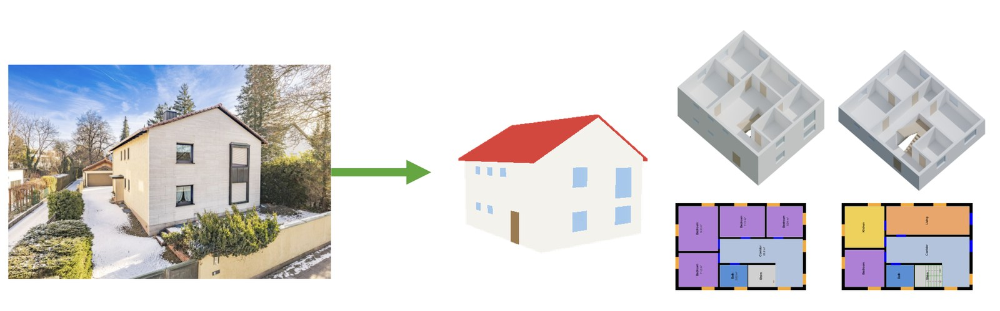
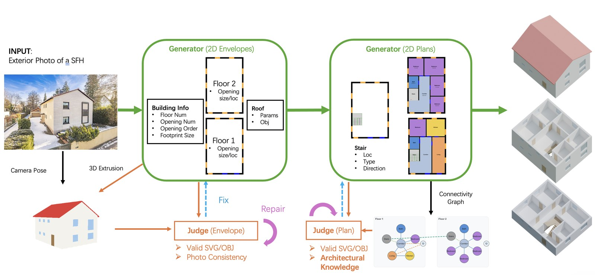
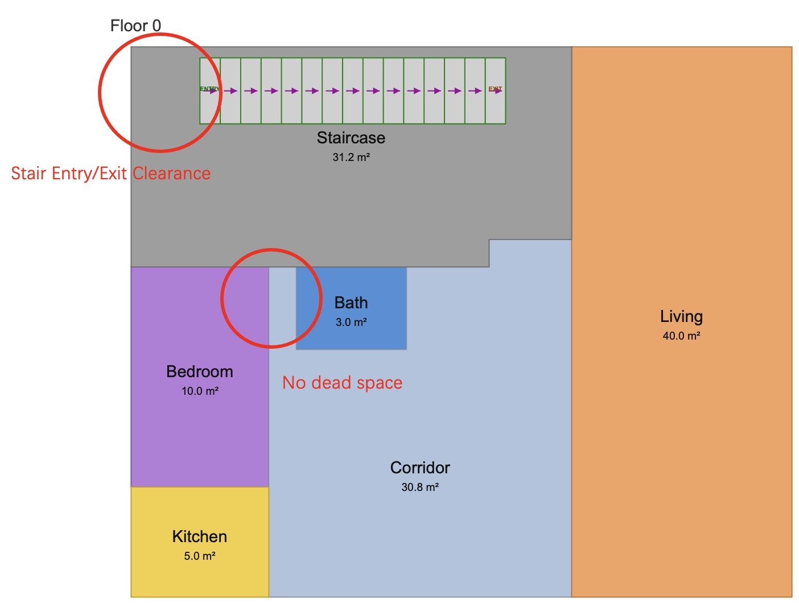
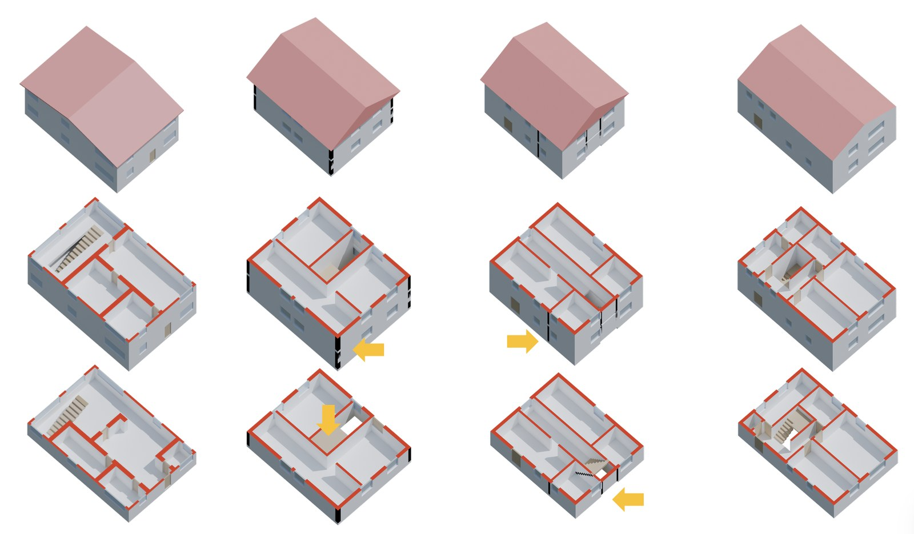

Despite recent advances in 3D generation from a single image, buildings remain largely unaddressed — especially multi-floor ones. Such data are challenging to model, difficult to acquire, and therefore scarce. Existing 3D building generation methods produce monolithic, hollow meshes or focus on internal decoration, often lacking internal structural awareness — a gap that makes the generated assets practically unusable for downstream applications such as physical simulation and digital twins.
We address the open problem of generating a complete 3D building with exterior, interior, and explicit component-level geometry from a single 2D exterior image and a set of architectural rules. To cope with the lack of training data, we propose a data-free agentic framework powered by general vision-language foundation models. Our key insight: buildings, as part of the human-built environment, are inherently governed by symbolic rules and regulations expressed in natural language, which seamlessly complement the visual cues of the input image. Taking image and rules as dual guidance, our approach iteratively reasons out 2D floor layouts, enforces symbolic verification of topological and human-centric architectural rules, and lifts them into a 3D structure with correct vertical topology.
On single-family houses — where cross-floor topological alignment is a hard requirement yet easily verifiable — extensive experiments demonstrate superior 2D layout rationality and 3D geometric quality, opening up unprecedented consistency and semantic editability.



Compare pairs of AI-generated house designs (floor plans and interactive 3D models) and pick the better one. Anonymous, about 15 minutes, desktop browser recommended.
Start the study →@article{anonymous2026architectural,
title = {Architectural-Compliant 3D Building Generation with Compositional Geometry from Single-Image},
author = {Anonymous},
journal = {Under review},
year = {2026}
}